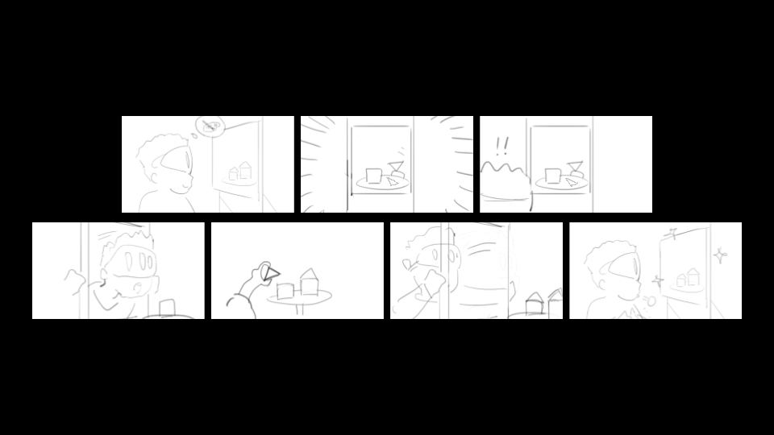

Overview
Liminal is a multi-room mixed reality experience where guests explore a strange museum and
discover magical interactions that blur the boundary between the physical and virtual worlds.
The project was proposed by Jesse Schell and Dave Culyba as a challenge: can mixed reality experiences extend
beyond a single room?
Most augmented reality experiences are limited to one space because environment tracking quickly breaks down
when the user moves between rooms. Furniture, lighting, and walls change, causing virtual objects to
drift. Even briefly leaving and re-entering a room can result in
several inches and tens of degrees of positional error, breaking immersion.
In March 2025, Meta opened Quest camera data to developers. This raised a new possibility: could camera data
be used to stabilize tracking and enable multi-room mixed reality?
Our goal was not only to explore that technical challenge, but also to build a
magical experience that demonstrates the possibilities of multi-room MR. Our definition of
creating magic is threefold:
- Eliciting amazement: interactions should make guests say “wow.”
- Blending physical and virtual: the experience should rely on both worlds.
- Cross-world interaction: physical objects influence virtual ones and vice versa.
The project name Liminal refers to existing between boundaries - in this case, between the
physical and virtual worlds.
Our Solution
Instead of attempting a general-purpose solution to AR drift, we focused on a scenario common in
location-based entertainment: experiences where the developer also controls the environment.
This allowed us to embed ArUco markers throughout the physical space. When the headset
detects these markers, it can rapidly recalibrate its pose relative to the room, significantly reducing drift.

By placing markers at known positions (outside doors and near points of interest), we created reliable anchor
points that allow the system to maintain alignment across multiple rooms.
Controlling the space also enabled richer interactions. By embedding sensors and physical props within the
environment, we could create moments where the physical and virtual worlds appear to interact. For example, a
guest might use a physical watering can to water a virtual plant, watching it grow as they pour water on it.
Narrative
Technical systems alone do not create magic. The experience also required a narrative framework that guides
the guest to discover interactions naturally.
In Liminal, the guest takes on the role of a night security guard in a strange museum
reminiscent of liminal “backrooms”-style spaces.
This setting serves several purposes:
- A museum naturally supports exploration across multiple rooms.
- Liminal environments feel slightly uncanny, allowing magical events to feel believable.
- The security guard role encourages guests to investigate unusual phenomena.
As guests explore the museum, they encounter magical moments where the boundaries between physical and
virtual begin to blur.

This is our storyboard for our painting experience, where players stick their head through a painting to find
a physical version of it, which they can interact with to "fix" the painting.
My Contributions
I served as a primary programmer and experience designer on Liminal, focusing on the technical systems that
enable the project’s magical interactions.
- Integrated ArUco marker detection with Quest camera data to stabilize multi-room tracking.
- Explored techniques for virtual occlusion and object removal to blend virtual elements
with physical surfaces.
- Collaborated with designers to evaluate technical feasibility and adapt experience concepts while
preserving magic and immersion.
Outcome
Liminal is currently in development and will be completed at the end of the Spring 2026 semester. So far we have:
- Developed a system for stabilizing mixed reality across multiple rooms.
- Designed several magical interactions blending physical and virtual elements.
- Built a working prototype of the painting interaction experience.
Future interactions under development include encounters where a mysterious creature appears getting closer
and closer each time the guest looks into different doors, and an installation where manipulating a physical
clock affects time within the environment.
At the end of the semester, both the experience and the underlying techniques will be passed to
Schell Games for potential expansion into future mixed reality projects.